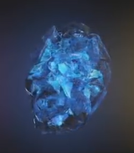
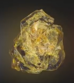
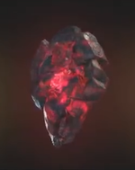

| Name |
Color |
Powers and capabilities |
Image |
| Space |
Blue |
The Tesseract is named for its cube-like appearance and is capable of
controlling space itself, providing the user instant access to any
location throughout the universe if used correctly. The unique element
that composes the Tesseract has also been used to create advanced
weaponry by races like the Humans.
|

|
| Mind |
Yellow |
The Scepter was a weapon that utilized the yellow Mind Stone housed
inside a blue computer module, which also masked the stone's presence.
Stark originally saw the Stone as a power source, whereas once
J.A.R.V.I.S. had the opportunity to study the stone he stated it was
more akin to a very powerful computer.
|

|
| Reality |
Red |
The Aether appears as a dark, red, viscous liquid. It acts as a
symbiotic force, capable of being absorbed into the body of a living
host, giving the user the ability to warp reality at will, granting
that person immense strength, durability, powers, and subjective
influence over the universe.
|

|
| Power |
Purple |
The Power Stone is an incredible power source, it increases the user's
physical abilities and allows it to manipulate energy, which, when
used at full potential, has enough power to obliterate an entire
planet when unleashed. This stone was sought by Thanos, who tasked
Ronan the Accuser to acquire it from the dead planet of Morag, in
exchange for destroying Xandar. However, Star-Lord acquired the stone
first and was prepared to sell it to Taneleer Tivan ("The Collector")
with Gamora until its destructive power was unleashed at Knowhere.
|

|
| Time |
Green |
The Eye of Agamotto is an ancient artifact, a pendant created by
Agamotto, the first Sorcerer Supreme, presumably to contain and
harness the power of the green Time Stone contained inside. After
being stored for an unknown amount of time on a pedestal in Kamar-Taj,
it was recently wielded by Doctor Stephen Strange, first to aid him in
his learning of sorcery, then in his final fight against Kaecilius and
Dormammu. When wielded by someone having the necessary knowledge and
skills, it appeared to be able to control the flow of time, be it on a
small or massive scale, notably to turn back something to a previous
state, to accelerate its time in order to apply changes that have not
happened yet, or to lock it in a time loop, resetting its state until
the wielder stops its effect. It appeared skilled sorcerers, or
perhaps users of powers from the Dark Dimension could to an extent
subtract themselves to the effects of the stone, stopping the
time-reversal affecting oneself or detecting one was stuck in a time
loop. It was noted by Wong and Karl Mordo that the use of the Eye was
contrary to the natural order of things and extremely dangerous. With
Wong's approval, it was placed back on its pedestal by Strange until
he learned how to properly harness its powers. Strange wore it once
again a little while later while meeting with Thor and Loki. Strange
was forced to later surrender the Stone to Thanos in order to save
Tony Stark's life.
|

|
| Soul |
Orange |
According to Wong's ancient texts, the Soul Stone could prove to be
the greatest threat out of all the Infinity Stones.[18] Gamora knew of
the location of the Soul Stone from a map she found to its whereabouts
(which she burnt) but kept this a secret from Thanos.
|

|
|
Infinity Stones on Wikipedia
|